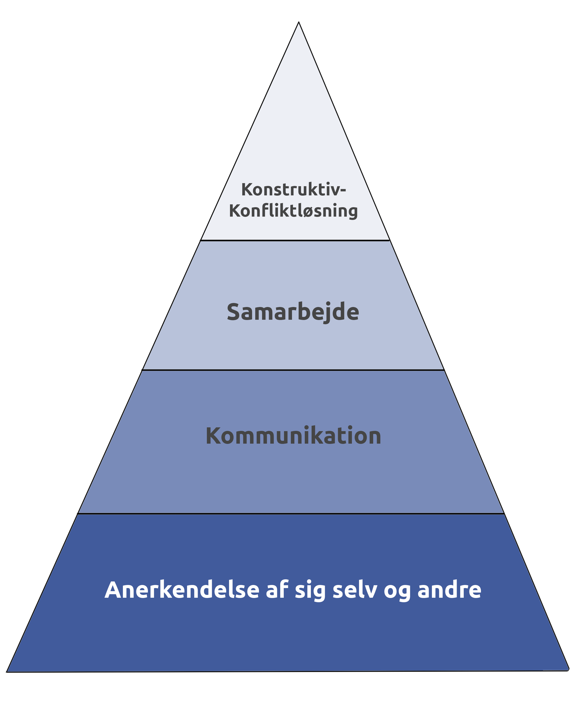

Storytelling er et brandingværktøj og en strategisk metode til at forbinde en målgruppe følelsesmæssigt til en fortælling om en virksomhed eller et produkt. Storytelling hænger derfor sommetider også sammen med journalistik og PR. Storytelling bliver derfor anvendt som en strategi i alle medieproduktioner. F.eks. Reklame, radio spots, sociale medier mm.
At skrive en tekst er nem, men at skrive en tekst som kan fange opmærksomheden hos læseren og vedligeholde deres interesse i det skrevne medie er en kunst. Journalistiske medier behøver ikke at være skrevne på papir, eller være en artikel på en hjemmeside, men kan også bestå af et opslag til en Facebook side, i forbindelse med kundeinteraktioner og brugeroplevelse
At skrive en tekst er nem, men at skrive en tekst som kan fange opmærksomheden hos læseren og vedligeholde deres interesse i det skrevne medie er en kunst. Journalistiske medier behøver ikke at være skrevne på papir, eller være en artikel på en hjemmeside, men kan også bestå af et opslag til en Facebook side, i forbindelse med kundeinteraktioner og brugeroplevelse.
Der findes flere typer af medier:
Tekst som et kommunikationsmiddel skal ikke undervurderes, og er det vigtige indholdsmedie for målgruppens interesse. Det er vigtigt at få tekst til at tale på en særlig måde til modtageren, for at din tekst som et kommunikativt medie fungere.
Niels Østergaard - Kommunikation - Erhvervs Akadami Dania Skive
Björn Marleir Sigurjónsson - Kommunikation - Erhvervs Akadami Dania Skive
Bo Sybrandt Hansen - Kommunikation - Erhvervs Akadami Dania Skive
"Kommunikation i Multimediedesign” 2. Udgave, Anne Mette Busch